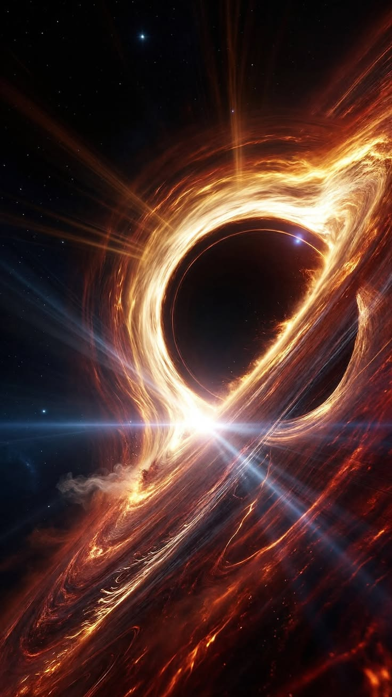

En el universo existen objetos misteriosos conocidos como agujeros negros.
Su gravedad es tan intensa que ni siquiera la luz puede escapar de ellos una vez que cruza su limite.
Algunos se forman cuando estrellas muy grandes llegan al final de su vida.
Aunque no podemos verlos directamente, los cientificos estudian sus efectos sobre los objetos cercanos.
